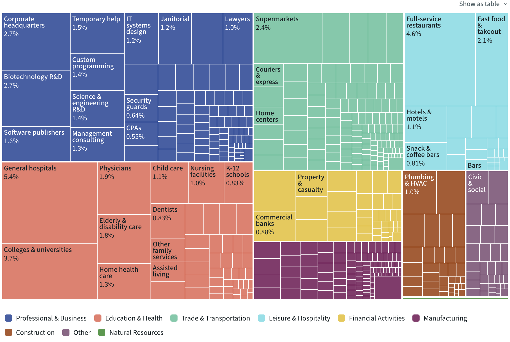
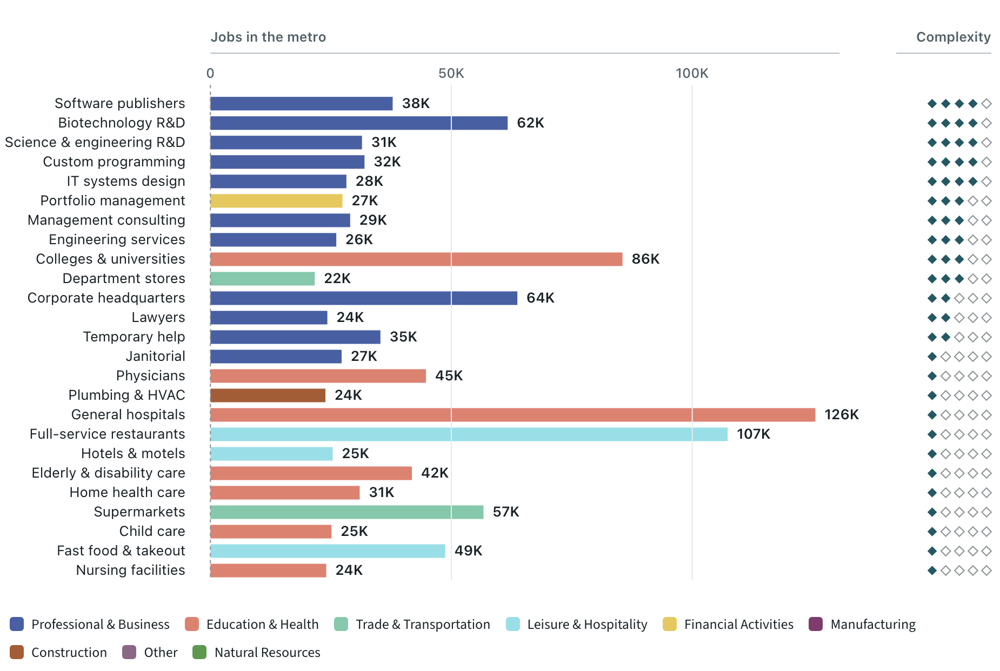
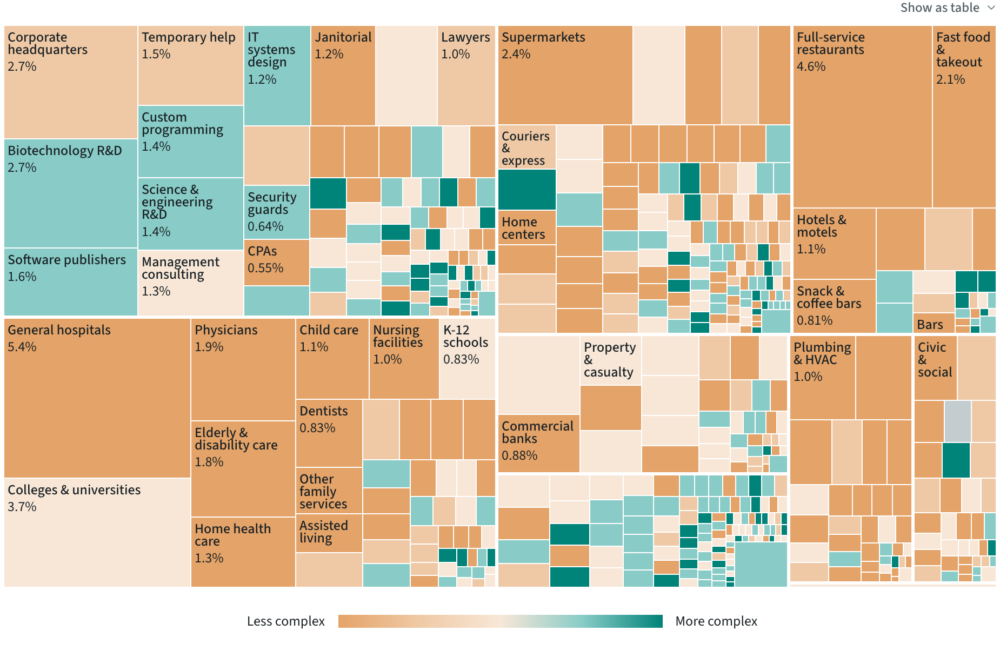

Today a question row sets the figure to the view that answers it and says "Showing", and pressing the row again goes back. Readers do not see what changed in the figure, or that the row is the way back. Four ways to make both plain, each a working mock of beat 1 beside the real chart.
In each mock, press the first question. Then go back the way that option offers. Nothing here adds words to the beat's paragraph or the answer.
The row turns tinted and reads "Showing"; the labels of the controls the question moved turn teal with a dot. Both marks are small and far apart, and nothing says the row is the way back.
"Show" carries a small switch. Pressed, its knob slides across and turns teal, the same teal dot the moved controls wear, and the row reads "Showing". A switch says "press again to turn this off" without a word.
In each control the question moved, the new value gets a filled teal dot and the value it left keeps a hollow ring and a faint outline, with a short wash over the pair at the moment it changes. The ringed value is the way back: pressing it returns the whole beat's view.
While a question stands, the figure's title gives way to a two-way switch in the same light dress as View and Color: "Starting view | Answer", with Answer pressed. Pressing "Starting view" brings the beat's view back; the switch stays for the rest of the beat, so the reader can flip between the two and watch the chart change.
The frame's border turns teal and a small tab sits on it, like a label on a folder: "Showing an answer", then "Back to the treemap" (named for each beat's own view). It never covers the chart.
3 answers both halves of the problem where the reader is looking at the chart, works on a phone, and uses only the figure's own kind of control; the cost is a second way back next to "Showing".
2 shows the change most precisely, and pairs well with 3 or 1 if the dots alone prove too subtle. 1 is the smallest change and fixes "how do I go back" in the text, but not "what changed". 4 is the most explicit, and the closest to what you turned down before.
Metro Industries 1/3
2.3 million jobs across 877 industries. Professional & business services and education & health are the two largest sectors, each about a quarter of the jobs.
Ask the chart
No. General hospitals, the largest, is 17th of these 25 by complexity. Software publishers leads.
Professional & business. About 45% of its jobs are in the teal cells, of higher complexity. In education & health, about 4%.


